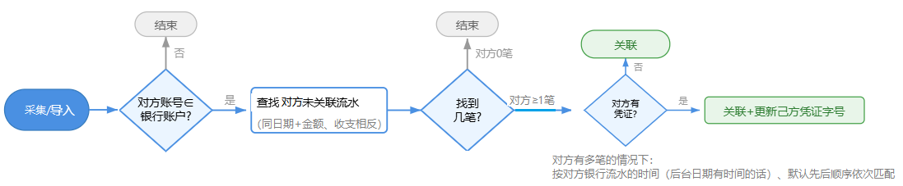
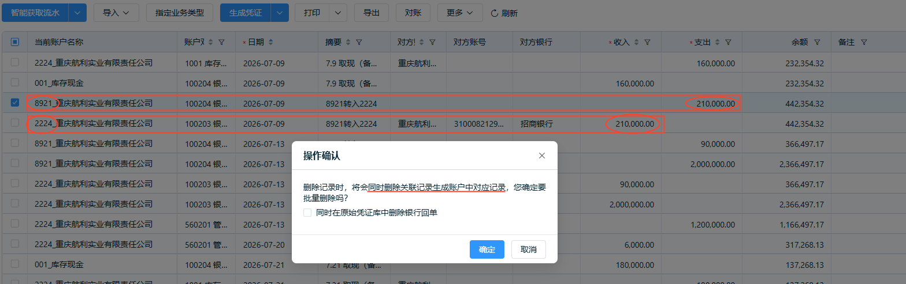
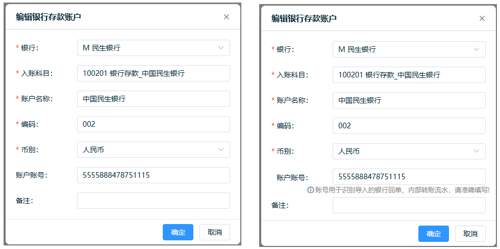

银行流水关联匹配 需求规格说明书
修订记录
| 版本 | 修订日期 | 修订内容 | 修订人 |
|---|---|---|---|
| V1.0 | 2026-10-16 | 初版，涵盖匹配条件、处理逻辑、消歧规则、边界场景 | 产品经理 |
1 需求背景介绍
1.1 客户原始需求
银行间转账（如从工行A账户转到招行B账户）会在转出方和转入方各产生一条独立的银行流水。用户导入流水后，两条记录彼此独立、分别生成凭证，导致财务账出现重复记录。客户期望系统能自动识别属于同一笔转账的两条流水并建立关联，避免重复记账。
1.2 业务场景及痛点
场景描述：用户在精斗云/账无忧中维护多个银行账户，日常通过导入银行流水进行记账。当发生账户间转账时，转出账户产生一条"支出"流水，转入账户产生一条"收入"流水，金额相同、方向相反、对方账号互指。
痛点：两条流水各自独立生成凭证导致同一笔转账在财务账上出现两次；用户需手动逐条比对并关联，效率低且易遗漏；多账户频繁转账时人工核对工作量巨大。
1.3 功能适用性评估
本需求属于规则驱动的自动匹配功能，核心是基于金额、方向、账号交叉、日期等确定性条件进行关联判定，不涉及AI模型调用。匹配逻辑清晰、规则可枚举，适合以确定性算法实现。
1.4 竞品分析
主流财务软件（如唯易、云账房、亿企赢等）的出纳模块普遍提供自动按对方银行账号匹配银行流水功能，其中一方生成凭证后自动反写另一方的凭证字号（或控制另一方无法再次生成凭证），确保财务账数据与银行流水一致。
2 整体实现思路
2.1 业务流程图

2.2 处理逻辑详述
步骤1：采集/导入
通过【智能获取流水】或【导入】功能采集银行流水数据。
步骤2：判断对方账号是否属于系统银行账户
对方账号∈银行账户？
- 否——结束。无需处理关联。
- 是——进入步骤3。
步骤3：查找对方未关联流水
逐一针对当前批次流水，查找对方账户中满足以下条件的未关联流水：同日期 + 同金额 + 收支相反。
找到几笔？
- 0笔——结束。无需处理关联。
- 对方≥1笔——进入步骤4。
步骤4：判断对方是否有凭证
对方有凭证？
- 是——建立关联 + 更新己方凭证字号
- 否——仅建立关联（不更新凭证字号）
对方有多笔的排序规则：按对方银行流水的时间（后台日期有时的话），默认先后顺序依次匹配。
2.3 对方多笔排序规则
对方有多笔匹配候选时，按以下规则排序依次匹配：
| # | 条件 | 处理 |
|---|---|---|
| 1 | 对方银行流水有时间信息（后台日期） | 按时间先后顺序依次匹配 |
| 2 | 对方银行流水无时间信息 | 按先后顺序（默认顺序）依次匹配 |
3 用户故事及需求实现
3.1 用户故事：银行流水自动关联匹配
3.1.1 故事描述
| 属性 | 值 |
|---|---|
| 需求编码 | G001 |
| 需求名称 | 银行流水关联匹配 |
| 优先级 | P1 |
| 需求类型 | 新增功能 |
| 所属模块 | 出纳模块 |
作为出纳人员，我希望在导入或手工录入银行流水后，系统能自动识别属于同一笔转账的两条流水并建立关联，以便避免重复记账、减少人工核对工作量。
3.1.2 主要业务逻辑
（1）触发时机
- 通过【智能获取流水】或【导入】采集的银行流水，导入完成后自动触发匹配。
- 手工新增的银行流水，保存时若该流水尚未建立关联，保存后自动触发匹配。
- 纯后端处理，不涉及前端界面变更。
（2）处理范围
针对通过【智能获取流水】、【导入】及【手工新增】方式录入的银行流水，通过对方账号进行匹配。手工新增的流水在保存时触发匹配（若该流水尚未建立关联）。
（3）匹配条件
两条流水同时满足以下全部条件即判定为关联：
| # | 条件 | 说明 |
|---|---|---|
| 1 | 金额相等 | 金额绝对值完全一致 |
| 2 | 方向相反 | 一条收入，一条支出 |
| 3 | 账号交叉 | A的对方账号 = B的账户账号，且B的对方账号 = A的账户账号 |
| 4 | 日期相同 | 日期为同一天 |
| 5 | 暂未关联 | 该银行流水暂未与其他账户银行流水关联 |
已关联的流水不参与后续匹配。
（4）处理逻辑
见 2.2 处理逻辑详述。核心判定：对方有凭证时建立关联并更新己方凭证字号；对方无凭证时仅建立关联。
（5）关联结果
- 对方有凭证：建立关联 + 更新己方凭证字号
- 对方无凭证：仅建立关联（不更新凭证字号）
- 对方有多笔：按时间先后或默认顺序依次匹配
（6）修改断开关联
修改已关联银行流水的【收入】或【支出】金额（值发生变化）时，系统自动断开该流水与对方流水的关联关系，双方均回退为未关联状态。断开后可重新参与后续匹配。
（7）删除不同步删除
删除已关联的银行流水时，不同步删除对方已匹配的流水记录。对方流水仅回退为未关联状态，记录本身保留。
此行为与现有的"自动生成对方日记账"功能不同——当前自动生成日记账场景下，删除一方时会强制删除对方日记账（见下图）。本功能仅建立关联关系，删除时不级联。

图：现有操作确认弹窗 — 删除一方时强制删除对方日记账（关联匹配场景不采用此行为）
（8）生成凭证反写双方凭证字号
被关联的银行流水，后续其中一方生成凭证时，系统自动反写双方凭证字号。即己方生成凭证后，将凭证字号同步写入对方流水的凭证字号字段；对方生成凭证后，同样反写到己方。确保关联双方凭证字号保持一致。
3.1.3 异常处理逻辑
| 异常场景 | 触发条件 | 系统处理 | 用户提示 |
|---|---|---|---|
| 对方账号∉银行账户 | 对方账号不属于系统银行账户 | 结束，无需处理关联 | 无 |
| 对方0笔匹配 | 查找对方未关联流水为0笔 | 结束，无需处理关联 | 无 |
| 已关联流水被删除 | 用户删除已关联的某条流水 | 不同步删除对方流水，对手流水回退为未关联状态 | 无（区别于现有自动生成日记账的强制删除对方） |
| 已关联流水金额修改 | 用户修改已关联流水的收入或支出金额 | 自动断开关联关系，双方回退为未关联状态 | 无 |
| 手工新增流水保存 | 用户保存手工新增的银行流水且该流水尚未建立关联 | 保存后自动触发匹配 | 无 |
| 跨日到账 | 转出与转入日期不在同一天 | 日期不同不匹配，跳过 | 无 |
3.1.4 功能权限
本功能为纯后端自动处理，不涉及前端界面操作，无需额外权限配置。
3.1.5 操作日志
本功能为系统自动处理，不记录操作日志。
3.1.6 验收标准
| 验收项 | 通过标准 | 优先级 |
|---|---|---|
| 基本关联 | 满足条件（同日期+同金额+收支相反+对方账号∈银行账户+未关联）的两条流水自动建立关联 | P0 |
| 金额不等不建立关联 | 金额差异时不建立关联 | P0 |
| 方向相同不建立关联 | 同方向流水不建立关联 | P0 |
| 对方账号∉银行账户 | 对方账号不属于系统银行账户时不建立关联 | P0 |
| 跨日不建立关联 | 日期不同时不建立关联 | P0 |
| 已关联不参与 | 已关联流水不再参与新匹配 | P0 |
| 对方0笔 | 对方无匹配记录时不处理 | P1 |
| 对方有凭证 | 建立关联 + 更新己方凭证字号 | P0 |
| 对方无凭证 | 仅建立关联（不更新凭证字号） | P0 |
| 对方多笔排序-有时间 | 按对方流水时间先后顺序依次匹配 | P1 |
| 对方多笔排序-无时间 | 按默认先后顺序依次匹配 | P2 |
| 删除回退 | 已关联流水删除后对手回退未关联、记录保留 | P0 |
| 纯后端无UI | 全流程无前端界面变更 | P0 |
| 处理范围-智能获取 | 通过智能获取流水采集的数据触发匹配 | P0 |
| 处理范围-导入 | 通过导入功能导入的数据触发匹配 | P0 |
| 处理范围-手工新增 | 手工新增的银行流水保存后（若尚未建立关联）触发匹配 | P0 |
| 修改断开关联 | 修改已关联流水的收入或支出金额后双方回退为未关联 | P0 |
| 修改金额不变不断开 | 修改已关联流水的非金额字段（如摘要）不断开关联 | P1 |
| 删除不同步删除 | 删除已关联流水时对方流水记录保留、仅回退未关联 | P0 |
| 删除与日记账区分 | 本功能的删除行为区别于现有自动生成日记账的强制删除 | P0 |
| 生成凭证反写 | 已关联流水其中一方生成凭证后，系统自动反写双方凭证字号 | P0 |
| 反写一致性 | 反写后双方流水的凭证字号字段完全一致 | P0 |
3.2 用户故事：银行账户账号填写提示
3.2.1 故事描述
| 属性 | 值 |
|---|---|
| 需求编码 | G002 |
| 需求名称 | 银行账户账号填写提示 |
| 优先级 | P0 |
| 需求类型 | 增强优化 |
| 所属模块 | 出纳模块-基础资料 |
作为出纳人员，我希望在编辑银行存款账户时，系统给出准确填写账号的提示，以便确保银行流水自动关联所依赖的账号信息完整准确。
3.2.2 主要业务逻辑
（1）账户账号字段增加 tips 提示
在【账户账号】输入框下方增加灰色提示文字：
（2）界面效果

3.2.3 异常处理逻辑
本需求仅增加提示文字，无异常处理场景。
3.2.4 功能权限
与银行账户基础资料编辑权限一致，无需额外权限配置。
3.2.5 验收标准
| 验收项 | 通过标准 | 优先级 |
|---|---|---|
| tips提示文字 | 账户账号下方显示"账号用于识别导入的银行回单、内部转账流水，请准确填写！" | P0 |
3.3 用户故事：新功能首次引导提示
3.3.1 故事描述
| 属性 | 值 |
|---|---|
| 需求编码 | G003 |
| 需求名称 | 新功能首次引导提示 |
| 优先级 | P1 |
| 需求类型 | 新增功能 |
| 所属模块 | 出纳模块-银行流水 |
作为出纳人员，我希望在首次进入银行流水界面时收到新功能引导提示，以便快速了解银行内部转账自动关联功能及账号配置要求。
3.3.2 主要业务逻辑
（1）触发条件
用户首次进入银行流水界面时显示引导提示，关闭后不再显示（按用户维度记忆，每个用户仅展示一次）。
（2）提示内容
提示采用浮层卡片形式，内容如下：
银行流水支持自动匹配内部转账，请确保银行账户中的账号已设置正确。查看详细
其中"查看详细"为超链接，跳转至公司社区知识帖。
（3）交互行为
- 提示卡片有关闭按钮，点击关闭后该提示不再显示。
- 关闭状态按用户维度持久化（如通过用户偏好或本地存储标记）。
3.3.3 异常处理逻辑
本需求为引导提示，无异常处理场景。
3.3.4 功能权限
与银行流水界面查看权限一致，无需额外权限配置。
3.3.5 操作日志
本需求不涉及操作日志。
3.3.6 验收标准
| 验收项 | 通过标准 | 优先级 |
|---|---|---|
| 首次展示 | 用户首次进入银行流水界面时显示引导提示 | P0 |
| 关闭后不再显示 | 关闭提示后再次进入银行流水界面不再展示 | P0 |
| 提示内容正确 | 标题、正文、超链接内容与需求一致 | P0 |
| 超链接可跳转 | 点击"查看详细"可跳转至公司社区知识帖 | P0 |
| 按用户维度记忆 | 不同用户各自独立展示一次 | P1 |
4 关联性需求
| 关联模块 | 关联说明 |
|---|---|
| 银行流水导入 | 导入完成后触发匹配 |
| 智能获取流水 | 获取完成后（含定时任务的自动采集）触发匹配 |
| 手工新增流水 | 保存时若该流水尚未建立关联，保存后触发匹配 |
| 银行流水保存 | 修改已关联流水的金额后保存时断开关联 |
| 凭证管理 | 关联后生成凭证反写双方凭证字号 |
| 银行流水删除 | 删除已关联流水时对手回退 |
5 非功能需求
| 维度 | 要求 |
|---|---|
| 性能 | 单批次100条流水以内匹配处理≤2秒；1000条以内≤10秒 |
| 并发 | 多用户同时导入时匹配任务互不干扰 |
| 幂等性 | 同一批流水重复触发匹配不会产生重复关联 |
| 数据一致性 | 关联标记与凭证字号更新在同一事务内完成 |
6 安全与合规
本功能不涉及用户数据采集或外部接口调用，数据仅在系统内部银行账户间匹配，无额外安全与合规风险。
7 测试注意事项
重点覆盖多笔消歧场景：同一日期、同一金额、同方向的多笔转账。验证跨日结算场景（如T+1到账）确认不关联。验证已关联流水删除后对手正确回退。验证已关联流水金额修改后双方正确断开关联。验证手工新增流水保存后正确触发匹配。验证大批量流水导入时的性能表现。验证凭证字号反写双方一致性。
8 问题记录
暂无。
9 示例
匹配在流水导入完成或手工录入保存后自动触发。
| 账户 | 账户账号 |
|---|---|
| 工行2224 | 3100082619201002224 |
| 招行8921 | 3100082129024548921 |
工行2224 流水：
| 日期 | 收入 | 支出 | 对方账号 |
|---|---|---|---|
| 2026-07-24 | 202,000.00 | …8921 |
招行8921 流水：
| 日期 | 收入 | 支出 | 对方账号 |
|---|---|---|---|
| 2026-07-24 | 202,000.00 | …2224 |
金额 202,000 = 202,000 ✓ 方向 支出↔收入 ✓ 账号交叉 ✓ 同日 ✓ → 自动建立关联
— 文档结束 —